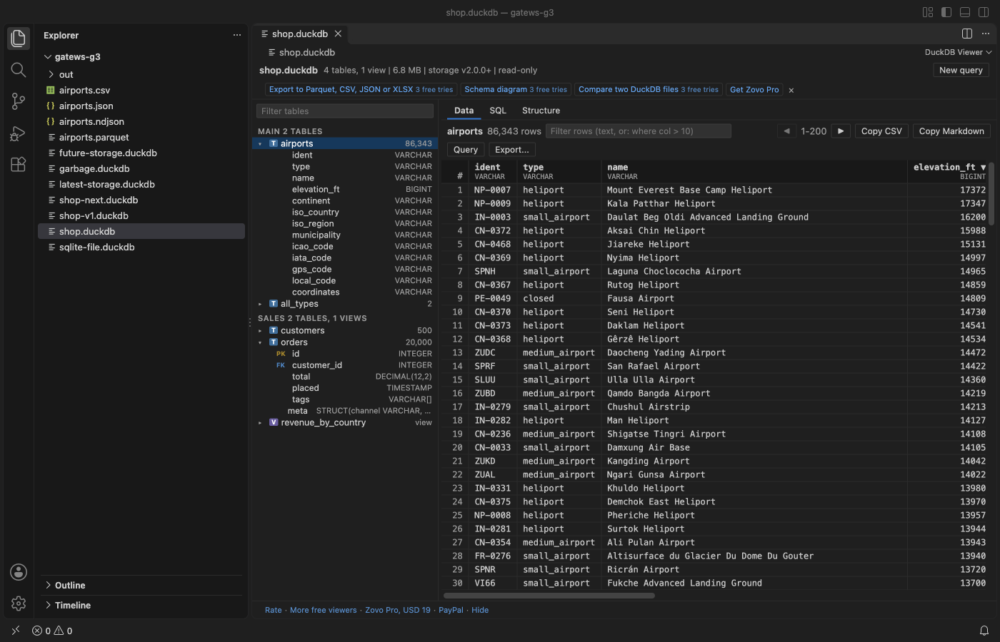

Open files in VS Code and Cursor / Tables and data
Open a .duckdb file in VS Code and run SQL on it
DuckDB Viewer & SQL Editor opens .duckdb and .ddb files in VS Code with a click: a schema tree with tables, row counts, views and keys, a table grid you can sort and filter, and a SQL editor. It also runs DuckDB SQL on CSV, Parquet and JSON files in place, with no import. DuckDB 2.0 is built in as WebAssembly, so there is nothing to install and nothing leaves your computer. All of that is free. Zovo Pro (USD 19 once) adds export to Parquet, CSV, JSON or XLSX, a schema diagram, and a compare of two DuckDB files, with 3 free tries each.
Free, MIT license. Extension ID zovo.zovo-duckdb-viewer, version 0.1.0. Needs VS Code 1.75.0 or newer.

Steps in VS Code
- Install DuckDB Viewer & SQL Editor from the Marketplace, or press Ctrl+P (Cmd+P on macOS) and run
ext install zovo.zovo-duckdb-viewer. - Click a
.duckdbor.ddbfile in the Explorer, or run "DuckDB: Open Database File...". It opens read-only, so the file never changes, even while another program uses it. - Pick a table on the left. Click a column header to sort, or type in the filter box: plain text, or a SQL condition such as
where price > 100. Double-click a cell to see the whole value. - Open the SQL tab and press Ctrl+Enter (Cmd+Enter on macOS) to run the query or the selected text. Table names work without the database prefix, for example
SELECT * FROM sales.orders. - To query a data file, right-click a CSV, TSV, Parquet, JSON or NDJSON file and pick Query with DuckDB. Joins across files and globs such as
'logs/*.parquet'work. - Copy a page or a result as CSV or as a Markdown table. "DuckDB: Open the Sample Database" opens a small shop database to try it.
Where Zovo Pro saves time
Opening DuckDB files, the schema tree, the table grid, the SQL editor, Query with DuckDB on CSV, Parquet and JSON files, and copy as CSV or Markdown are free, with no network calls. There is no trial timer and no license banner.
When the data has to leave DuckDB, Export writes a table, a view, a query result or a whole CSV, Parquet or JSON file to Parquet (zstd, snappy or gzip), CSV with your delimiter, JSON, or an Excel file with numbers kept as numbers. It can also split the output into one folder per value of a column (Hive partitions). The other two Pro tools are the Schema Diagram, every table with its keys and foreign key lines, saved as SVG or copied as a Mermaid ER diagram, and Compare Two DuckDB Files, a Markdown report of schema changes, row counts and rows changed by primary key.
With Export to Parquet, CSV, JSON or XLSX (Zovo Pro)
- Open the table, run the query, or right-click the data file, then click "Export to Parquet, CSV, JSON or XLSX" in the viewer's top bar (or run "DuckDB: Export to Parquet, CSV, JSON or XLSX (Pro)").
- Pick the format and its options, and where to write the file or folder.
- Open the result. A try counts only when the tool has made its file.
Export to Parquet, CSV, JSON or XLSX works 3 times on your computer before it asks for a license, and a try counts only when you get a result. Opening a file shows no popup and no countdown.
Zovo Pro costs USD 19 once. It is not a subscription, and it turns on the Pro tools in every Zovo extension, not only DuckDB Viewer & SQL Editor. After a card payment (Stripe) your license key shows on the next page. In VS Code, run "Zovo Pro: Enter Zovo Pro license key" from the Command Palette and paste it. The key is checked on your computer, with no network call. With GitHub Sponsors, pick the "$19 one time" tier, then run "Zovo Pro: I already paid: unlock with GitHub Sponsors" and sign in with the same GitHub account. With PayPal, send USD 19 with "Zovo Pro" in the note and the key comes by email within a day.
A team of 5: USD 59 once, by card or by PayPal. Every rule and every Pro tool is on the Zovo Pro page.
Steps in Cursor, Windsurf or VSCodium
- Open the Extensions view with Ctrl+Shift+X (Cmd+Shift+X on macOS).
- Search for
zovo.zovo-duckdb-viewerand click Install. Cursor, Windsurf and VSCodium install from Open VSX, where it is published aszovo/zovo-duckdb-viewer. - If your editor has no gallery, download the .vsix from the Open VSX page and run "Extensions: Install from VSIX...".
- Then use it the same way as in VS Code.
What DuckDB Viewer & SQL Editor handles
- Files written by DuckDB 1.x and 2.0. A file from a newer DuckDB, a SQLite file or a damaged file shows a clear message.
- Schemas, tables with row counts, views, and columns with their types, primary keys and foreign keys, with a filter by table or column name.
- Temporary tables in the SQL editor:
CREATE TEMP TABLE t AS SELECT .... - The same behaviour on Windows, macOS and Linux, and in Cursor and Windsurf.
What it does not do
- Database files always open read-only: INSERT, UPDATE, DELETE and CREATE TABLE are refused, and the free viewer never writes files (
COPY ... TOis refused). - Only the Parquet and JSON extensions are bundled. Spatial, httpfs, excel and sqlite are not, and nothing is downloaded.
- Rows that another DuckDB process has not checkpointed yet may not show.
- Encrypted DuckDB files are not supported. The engine uses about 300 MB of memory while a viewer is open.
Other options
- DuckDB Sql Tools (
RandomFractalsInc.duckdb-sql-tools, 65,075 installs, not on Open VSX). Its own description: "DuckDB Sql Tools extension adds DuckDB connections, database schema, and SQL query user interfaces to VSCode IDE." - DuckDB (
chuckjonas.duckdb, 28,326 installs, on Open VSX). A DuckDB client for VS Code that, by its own description, queries CSV, Parquet, JSON and Excel files directly. - The DuckDB CLI.
duckdb shop.duckdbin a terminal opens the file for SQL, with no grid.
Install counts and Open VSX status were checked on 12 November 2026. Descriptions in quotes are the extensions' own.
Questions
Can VS Code open a .duckdb file without an extension?
No. A .duckdb file is binary, so VS Code shows it as unreadable text. You need an extension or the DuckDB CLI.
Do I need to install DuckDB?
No. DuckDB 2.0 runs as WebAssembly inside the extension, with the Parquet and JSON extensions bundled.
Can it change my database?
No. Database files open read-only and write statements are refused. Temporary tables work for your own queries.
Does it work in Cursor or Windsurf?
Yes. Cursor, Windsurf and VSCodium install extensions from Open VSX. Search for the extension in their Extensions view and install it there.
More about DuckDB Viewer & SQL Editor
Read the DuckDB Viewer & SQL Editor page for every feature and setting, or the source code on GitHub.
Related guides
- Open an Excel .xlsx file in VS Code
- Open an Excel file in Cursor
- See a CSV file as a table in VS Code
- Open a Parquet file in VS Code
Zovo Pro and support
Zovo Pro: USD 19 once, every Zovo viewer. It turns on the Pro tools in this extension and in the other Zovo extensions you use. The free features stay free.
After a card payment your license key shows on the next page. Paste it with the command "Zovo Pro: Enter a key".
You can also support the work with no Pro:
Need your format supported?
Open a format request with a sample file, and I reply there whether it can be done. For USD 299 once, through this GitHub Sponsors tier, I add your file format or a missing feature to this extension, with tests, within 7 days.